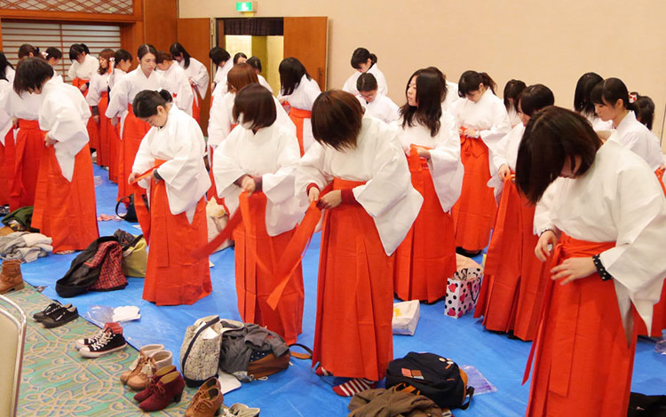

三月五日，对于众多人来讲是个普通的节日，但是对于二次元爱好者而言，则是一个不大不小的节日，因为今天是二次元世界的“巫女节”！
为什么三月五日就是巫女节呢，因为在日语里，三的读音除了san之外还有mi，五的读音是go，而三五的谐音miko正是日语里“巫女”的读音，于是，三月五日自然而然就成了二次元世界中的“巫女节”！
既然说到了巫女，那么先说一下它和女巫的不同之处。“女巫”在欧洲地区通行的拉丁文中，邪恶的女性魔法师称为「malefica」，指「使用邪恶魔法的女性」。而今天节日的主角“巫女”，又称神子，源自对神的信仰，是类似于主祭、先知一般的存在。传说巫女可以接受神的凭依，传达神的意志。天钿女命、菊理媛、卑弥呼等就是古代日本最有名的几位巫女。
直到现代，巫女仍然是日本神道教的神职人员之一，通常巫女身着白色上衣及红色绯袴，具有清新、神圣、无垢之传统形象，但已经没有对神的虔诚信仰，也失去了神圣的灵媒身份，而只是一种职业。在现代，要成为巫女已经没有什么严格的限制和门槛了，特别是还有着在业余时间兼职打工的巫女。
既然巫女节是存在于二次元世界的节日，那么对巫女二次元形象的介绍当然必不可少咯！现在随着ACG次文化的发展，巫女也成为了萌属性之一，而且是较为流行的萌属性。
现代的巫女失去了神圣的灵媒身份，但是传统上，巫女一直是清新、神圣、无垢、传统、古典的形象。再配上那典雅的巫女服，使得现代巫女也有着一种特殊的魅力。而且，由于现代巫女的自由性，如果巫女同时搭配其他属性，比如傲娇、腹黑、天然呆会使其角色更加可爱。
1、巫女的年龄限制一般在二十五岁以下(依神社不同而有异). 以大学毕业的二十二岁来估算，能担任巫女之职的时间仅有三年；
2、如果去神社的时候能看到巫女表演的巫女神乐那就太棒了！